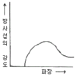
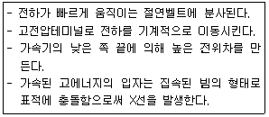
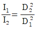
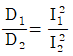
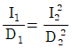
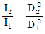

방사선비파괴검사산업기사 (2017-03-05 기출문제)
1과목: 비파괴검사 개론
1. 이상적임 침투액의 특성에 대해 잘못 설명한 것은?
- 증발이나 건조가 빨라야 한다.
- 미세 개구부에 쉽게 침투되어야 한다,
- 얇은 도포막을 형성하여야 한다,
- 냄새가 없으며 불연소성이여야 한다.
(정답률: 84%)

2. 다음 초음파 중에서 전파속도가 가장 느린파는?
- 종파
- 횡파
- 압축파
- 표면파
(정답률: 100%)
3. 다음 중 방사선투과검사로 가장 검출이 힘든 결함은?
- 판재의 두께 차이 측정
- 주조품의 탕계(cold shut) 검출
- 봉재의 심(seam) 검출
- 용접부의 수축 균열 검출
(정답률: 알수없음)
4. 비파괴시험을 수행하는 기술자에게 가장 우선적으로 요구되는 사항은?
- 검사자는 성실성이 작더라도 능력만 있으면 된다.
- 검사의 정확도보다는 작업비용을 적게 들도록 한다.
- 시험한 제품의 안정성에 대한 책임감을 가져야 한다.
- 어떤 사정이 생기면 제조공정을 계획하고 비파괴검사를 실시하여야 한다.
(정답률: 87%)
5. 열처리의 영향에 따른 전기전도도의 변화를 측정할 수 있는 비파괴검사법은?
- 자분탐상시험
- 음향방출시험
- 와전류탐상시험
- 초음파탐상시험
(정답률: 75%)
6. Fe-C상태도에서 공석반응이 일어나는 온도는 약 몇 ℃ 인가?
- 700℃
- 723℃
- 1147℃
- 1493℃
(정답률: 62%)
7. 초소성 재료의 특징을 설명한 것 중 틀린 것은?
- 외력을 받았을 때 슬립 변형이 쉽게 일어난다.
- 초소성 재료는 300~500% 이상의 연성을 가질 수 없다.
- 초소성 재료는 낮은 응력으로 변형하는 것이 특징이다.
- 초소성은 일정한 온도영영과 변형속도의 영역에서 나타난다.
(정답률: 67%)
8. Co계 주조 경질 합금으로 사용되는 공구 재료는?
- 탄소강
- 게이지강
- 스텔라이트
- 구상흑연주철
(정답률: 63%)
9. 공구용 합긍강에 요구되는 일반적인 특성으로 틀린 것은?
- 열철리성이 우수해야 한다.
- 마멸성 및 충격성이 커야 한다.
- 상온 및 고온에서 경도가 커야 한다,
- 피삭성이 좋고, 내마모성이 커야 한다.
(정답률: 54%)
10. 다음 중 대표적인 시효 경화성 합금은?
- Fe-C 합금
- Ni-Cu 합금
- Cu-Sn 합금
- Al-Cu-Mg-Mn 합금
(정답률: 67%)
11. 압력이 일정한 경우 A, B 합금에서 두 상이 공존하는 영역에서의 자유도는?
- 0
- 1
- 2
- 3
(정답률: 85%)
12. Al-Si계 합금에서 개량 처리를 하기 위해 사용되는 첨가제가 아닌 것은?
- 불화물
- 금속 Mn
- 금속 Na
- 수산화나트륨(NaOH)
(정답률: 62%)
13. 금속 중에 0.01~0.1um 정도의 미립자를 분산시켜, 모체 자체의 변형 저항을 높여 고온에서의 탄성률, 강도 및 크리프 특성을 개선하기 위해 개발된 재료는?
- FRM
- PSM
- FRS
- CFRP
(정답률: 62%)
14. 소성변형에 대한 설명으로 틀린 것은?
- 소성변형하기 쉬운 성질을 사소성이라 한다.
- 소성가공법에는 단조, 압연, 인발 등이 있다.
- 재료에 외력을 가했다가 외력을 제거하면 원상태로 되돌아오는 것을 소성이라 한다.
- 가공으로 생긴 내부응력을 적당히 남게 하여 기계적 성질을 향상시킨다.
(정답률: 알수없음)
15. 주철을 파면에 따라 분류한 것이 아닌 것은?
- 회주철
- 백주철
- 반주철
- 가단주철
(정답률: 73%)
16. 다음 중 융접의 종류가 아닌 것은?
- 테르밋 용접
- 초음파 용접
- 피복 아크 용접
- 서브머지드 아크 용접
(정답률: 65%)
17. AW 240, 정격 사용률이 50%인 용접기를 사용하여 200a로 용접할 때 이 용접기의 허용 사용률은?
- 54%
- 60%
- 72%
- 120%
(정답률: 79%)
18. 용접 결함 중 구조상의 결함에 속하지 않은 것은?
- 변형
- 기공
- 언더컷
- 오버랩
(정답률: 70%)
19. 직류아크용접에서 정극성과 연극성을 비교했을 때 연극성의 특징으로 틀린 것은?
- 비드 폭이 좁다.
- 박판용접에 적합하다.
- 용접봉의 논는 속도가 빠르다.
- 주철 및 고탄소강 용접에 적합하다.
(정답률: 57%)
20. 용접 변형에 대한 교정 방법에 속하지 않는 것은?
- 피닝법
- 점 수축법
- 덧살 올림법
- 직선 수축법
(정답률: 72%)
2과목: 방사선투과검사 원리 및 규격
21. 방사선투과시험 필름에서 망상주름이 생기는 가장 주된 이유는?
- 현상액에 산성의 정착액이 들어갔을 떄 생긴다.
- 국부적으로 필름이 심하게 눌려졌을 경우에 생긴다.
- 현상처리 가정에서 온도가 갑자기 변할 때 생긴다.
- 수세용 물이 적절히 순환되지 않는 경우에 생긴다.
(정답률: 65%)
22. SI 단위인 1시버트(Sv)에 해당하는 것은?
- 1 rad
- 1 rem
- 100 rad
- 100 rem
(정답률: 85%)
23. 100kvp X선에서 후방 산락각이 135°인 경우 사용 재질의 두께가 동일하다면 후방살란 선량률이 가장 작은 것은?
- 납판 + 알루미늄판
- 납판
- 강판
- 알루미늄판
(정답률: 알수없음)
24. X선의 성질 중에서 방사선투과상(image)과 상관성이 가장 먼 것은?
- 흡수와 산란
- 사진작용
- 회정작용
- 형광작용
(정답률: 64%)
25. 방사선 투과사징을 판독할 때 관독하기에 적합한 필름인가를 결정하기 위하여 확인할 필요가 없는 것은?
- 사진농도의 범위
- 촬영조건
- 필름의 입상성
- 투과도계의 식별도
(정답률: 10%)
26. 타겟이 텅스텐으로 된 X선 발생장치를 관전압 250kVp로 작동할 때, X선 전환율은? (단,텅스텐의 원자번호는 74이다.)
- 1.0%
- 1.6%
- 2.0%
- 2.6%
(정답률: 42%)
27. 필름특성곡선에 대한 설명으로 틀린 것은?
- 노출과 사진농도와의 관계를 나타낸 그래프이다.
- 곡선의 기울기가 작아질수록 식별도는 증가한다.
- 필름 콘트라스트는 기울기가 최대가 되는 곳에서 가장 크다.
- 곡선의 기울기가 커질수록 일정 선량차에 대한 농도차는 크게 된다.
(정답률: 80%)
28. X선 방생장치의 관구에 부착한 필터(filter)의 두께를 증가하면 그림과 같은 X선 스펙트럼은 어떻게 변하는가?

- 모양은 변하지 않고 방사선의 강도만 커진다.
- 더 짧은 파장이 나타난다.
- 방사선의 강도가 동일하게 증가한다.
- 곡선은 높은 에너지쪽을 치중되고 강도는 낮아진다.
(정답률: 69%)
29. 다음 중 콘트라스트에 영향을 미치는 인자가 아닌 것은?
- 시험체의 흡수계수 차
- 선원의 흔들림
- 방사선 선질
- 필름의 종류
(정답률: 69%)
30. 방사선 투과시험에 사용되는 선원으로 원자로에서 분열 생성물(fission product)로 생성되는 선원은?
- Tm-170
- lr-192
- Cs-137
- Co-60
(정답률: 84%)
31. 보일러 및 압력용기에 대한 방사선투과검사(ASME Sec.V Art.2)에서 연속사용 시 농도계는 몇 시간마다 교정 확인을 하는가?
- 2시간
- 4시간
- 8시간
- 16시간
(정답률: 62%)
32. 보일러 및 압력용기에 대한 방사선투과검사(ASME Sec. V Atr.2)에서 요구되는 절차서 요건과 관계가 없는 것은 무엇인가?
- 사용된 동위원소 또는 최대 X선 전압
- 선원-시험체 간 거리
- 선원 크기
- 스크린 상표 및 명칭
(정답률: 82%)
33. 방사선 방호 등에 관한 기중에서 사용하는 등가 선량의 단위는?
- 쿨롱/킬로그램(C/kg)
- 뢴트겐(R)
- 그레이(Gy)
- 시버트(Sv)
(정답률: 87%)
34. 주강품의 방사선투과시험방법(KS D 0227)에 의한 주강품 수축의 결함 길이 측정 시 1류의 경우, 시험부 살께에 관계없이 세지 않는 나뭇가지 모양 결함의 퇴대 면적은 얼마인가?
- 3mm2
- 5mm2
- 7mm2
- 10mm2
(정답률: 37%)
35. 보일러 및 압력용기에 대한 방사선투과검사(ASME Sec. V Art.2)에서 투과필름 최소 농도로 옳게 짝지어진 것은?
- X선 : 1.3, 감사선 : 1.8
- X선 : 1.5, 감마선 : 2.0
- X선 : 1.8 감마선 : 2.0
- X선 : 2.0 감마선 : 2.0
(정답률: 78%)
36. 유해방사선에 대한 인체 영향을 감소시키는 근본적인 방법으로 옳지 않은 것은?
- 방사선원으로부터 거리를 멀리한다.
- 방사선원 근처에 머무르는 시간을 짧게 한다.
- 방사선원가 인체 사이에 차폐체를 설치한다.
- 방사선원의 선량률를 주기적으로 점검한다.
(정답률: 100%)
37. 방사능 측정에서 측정 대상이 감마선일 경우 적절한 측정기가 아닌 것은?
- 이온 전리함
- GM 계수관
- BF3 계수관
- 신틸레이션
(정답률: 79%)
38. 보일러 및 압력용기에 대한 방사선투과검사(ASME Sec.V Art.2)에서 요구하는 국가 표준 그텝 태블릿은 치소 몇 스텝(step) 인가?
- 3
- 4
- 5
- 8
(정답률: 55%)
39. 강 용접 이음부의 방사선투과시험방법(Ks B0845)에 따라 평판 맞대기 이음을 촬영할 때 식별되어야할 투과도계의 최소 선지름을 결정하기 위해 적용 되어야 할 두께로 옳은 것은? (단, 상질은 A급이면 단위는 mm이다.)
- 모재두께 4~5 최소 선지름 : 0.125
- 모재두께 8~10, 최소 선지름 : 0.16
- 모재두께 20~ 32, 최소 선지름 : 0.50
- 모재두께 63~80, 최소 선지름 : 0.80
(정답률: 75%)
40. 원자력안전법령에서, 수정체에 대한 방사선 작업종사자의 연간 등가선량한도는 얼마로 규정하고 있는가?
- 80mSv
- 150 mSv
- 300 mSv
- 750 mSv
(정답률: 91%)
3과목: 방사선투과검사 시험
41. 방사선 투과사진을 촬영할 때 기본적인 3가지 필수사항과 가장 거리가 먼 것은?
- 필름
- 차폐물
- 방사선 선원
- 시험할 물체
(정답률: 알수없음)
42. 다음 중 방사선 투과검사에서 방사선이 시험체에 흡수되는 정도에 가장 적게 영향을 미치는 인자는?
- 시험체의 두께
- 시험체의 결정립
- 시험체의 밀도
- 시험체의 원자번호
(정답률: 64%)
43. 방사선투과검사할 때 두꺼운 금속에 대하여는 연박증감지 또는 금속형광증감지를 사용한다. 이 때 사용되는 금속형광증감지에 대한 설명으로 틀린 것은?
- 선명도가 매우 좋다.
- 산란선을 방지하여 준다.
- 증감률은 에너지에 따라 다르다.
- 감광원은 형광 또는 2차 전자이다.
(정답률: 80%)
44. 현상 작업실인 암실에서의 금지사항에 대한 설명으로 틀린 것은?
- 암실온도는 약 24℃를 넘지 않도록 한다.
- 스크린의 표면을 더럽히지 않도록 한다.
- 필름을 구부리거나 누르지 않도록 한다.
- 필름통은 반드시 눕혀서 내부 필름들 간에 공기가 생기지 않게 적은 량이 적재되지 않도록 한다.
(정답률: 93%)
45. 다음 중 용접부결함이 아닌 것은?
- 용입부족
- 파이프
- 수축관
- 융합부족
(정답률: 알수없음)
46. 공진 변압기형 X선 발생장치에서 철심과 절연유를 대신하여 교류 전원의 주파수에서 고전압 회로를 공진시키고 냉각제로 SF6나 프레온가스를 사용할 때의 장점은?
- 장치의 크기나 무게 감소
- 누설 방사선의 차폐 용이
- 관전압과 관전류의 동시 조정가능
- X선상의 상질 개선
(정답률: 60%)
47. 배관 용접부를 방사선투과검사할 때 관벽을 이중으로 투과 촬영하여 필름을 부착한 쪽의 용접부만을 사진상에 나타나게 하는 촬영 방법은?
- 내부선원 촬영방법
- 이중벽 단면 촬영방법
- 내부필름 촬영방법
- 이중벽 양면 촬영방법
(정답률: 87%)
48. 관전압 200kWp, 관전류 5mA의 X선 발생 장치로 어떤 시험편을 촬영거리 60cm로 2분간 촬영하여 농도 2.0의 사진을 얻었다. 같은 조건하에서 촬영거리를 80cm로 하여 같은 농도의 사진을 얻으려면 촬영시간은 얼마로 하여야 하는가?
- 2.24분
- 2.94분
- 3.56분
- 3.86분
(정답률: 54%)
49. 필름 스크라치에 의한 의사지시를 확인하는 방법으로 적절한 것은?
- 농도계를 사용하여 확인한다.
- 필름의 양면을 암실용 암등으로 비춰본다.
- 필름의 양면을 반사광을 이용하여 비춰본다.
- 필름의 양면을 자외선 조사등으로 비춰본다.
(정답률: 알수없음)
50. 필름특성곡선에 관한 설명으로 틀린 것은?
- H&D 곡선이라고도 한다.
- 필름특성곡선상에서의 기울기는 항상 불변이다.
- 특성곡선의 기울기는 필름콘트라스트에 영향을 준다.
- 감광물질에 적용된 노출과 그 노출에 따른 사진 농도와의 관계를 나타낸 그래프이다.
(정답률: 62%)
51. X선 발생장치를 사용하기 전 충분히 예열을 하는 가장 큰 이유는?
- 고전압 회로의 과열방지를 위하여
- X선 관의 수명을 연장시키기 위하여
- 안전장치의 정상작동을 점검하기 위하여
- 제어장치를 보호하고 작동을 원활하게 하기 위하여
(정답률: 75%)
52. X선 발생장치에서 관전압과 선원-필름간 거리가 일정할 때 노출량 계산을 위한 관전류(M)와 노출시간(T)과의 관계를 옳게 나타낸 것은? (단, M1, M2, T1, T2는 M, T 각각의 변화량이다.)
- M1×T2=M2×T1
- M1×T1=M2×T2
- M1+T1=M2+T2
- M1-T1=M2-T2
(정답률: 73%)
53. X선 발생장치에서 방사구에 부착, 투과에 도움이 되지 않는 파장이 긴 X선을 제거하여 산란방사선의 발생을 줄이기 위해 사용되는 것은?
- 필터
- 조리개
- 조사통
- 중심지시기
(정답률: 75%)
54. 다음 설명과 같은 고에너지 X선 발생장비는?

- 베타트론
- 선형가속기
- 반데그라프형 발생장치
- 공진변압기형 X선 장치
(정답률: 82%)
55. Ir-192로 철강재질을 방사선투과검사할 때 경제성 등을 고려한 알맞은 투과 범위로 옳은 것은?
- 1mm~3mm
- 19mm~50mm
- 19mm~100mm
- 19mm~140mm
(정답률: 67%)
56. 두께 30mm인 강용접부를 선원-필름간 거리 30cm에서 Ir-192 40Ci로 1분간 노출을 주어 적절한 사진농도를 얻었을 때 이 선원으로 5개월 후에 선원-필름간 거리 60cm에서 같은 농도를 얻기 위한 노출시간은? (단, Ir의 반감기는 75일이다.)
- 4분
- 8분
- 16분
- 32분
(정답률: 57%)
57. 주조결함 중 주형 내에서 용탕의 2개의 흐름이 합류할 때 경계가 완전히 융합하지 못하여 생기는 결함은?
- 콜드셧
- 주탕불량
- 혼입물
- 다공성 수축
(정답률: 65%)
58. 방사선투과사진 필름을 수동 현상처리할 때의 설명으로 틀린 것은?
- 수동 현상 시 25℃ 이상의 온도에서의 현상작용이 신속히 진행되어 안개현상(fog)의 원인이 된다.
- 노출된 필름을 행거에 고정하고 용량이 알맞은 탱크에 행거를 넣고 전체를 교반한다.
- 현상 시간이 길어질수록 감도 및 평균 콘트라스트가 커지므로 현상시간을 길게 할수록 좋다.
- 20℃의 현상온도 유지가 곤란하면 18~22℃ 범위 내에서 처리시간을 조정하여 행하여도 좋다.
(정답률: 80%)
59. 방사선투과검사에서 방사선의 강도를 I1, I2라고 할 때, 선원-시험체 간 거리 D1, D2와의 관계식으로 옳은 것은?




(정답률: 58%)
60. X선을 발생시키기 위한 기본 요구조건이 아닌 것은?
- 고속의 전자를 발생하여야 한다.
- 전자의 발생선원이 있어야 한다.
- 튜브 중앙에 창(window)이 있어야 한다.
- 전자의 충격을 받을 표적(target)이 있어야 한다.
(정답률: 100%)